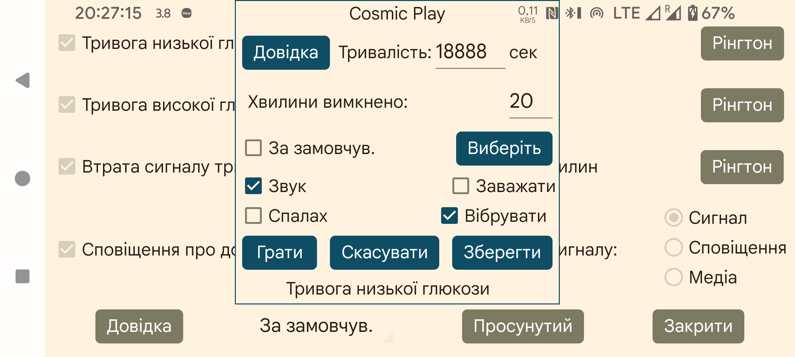

ar be de es fr hi it ja nl pl pt ru tr uk uz zh en

Виберіть мелодію для сигналу або сповіщення та тривалість її відтворення в секундах.
Хвилини вимкнено:: якщо низький або високий рівень глюкози зберігається, сигнал не спрацює повторно одразу. Можна вказати, через скільки хвилин він має повторитися, якщо умова не зникла.
Звук: відтворювати звук.
За замовчув.: використовувати типовий звук.
Виберіть: вибрати мелодію. На деяких телефонах Samsung попередньо встановлена програма вибору мелодій аварійно завершується, тому потрібно встановити іншу програму, доступну для інших застосунків, наприклад: https://play.google.com/store/apps/details?id=com.centralparkapps.ringo.ringtones або https://apkcombo.com/ringtone-picker/de.kumpewo.ringtones
Вібрувати: вібрувати.
Заважати: якщо режим «Не турбувати» увімкнено, вимкнути його перед відтворенням сигналу. Якщо Juggluco не має потрібного дозволу, відкриється екран налаштувань Android, де його можна надати. Увімкнувши «Не турбувати» і натиснувши Грати, можна перевірити, чи працюють сигнали в режимі «Не турбувати». У попередніх версіях Juggluco режим «Не турбувати» після сигналу вмикався знову. У поточній версії цього немає, бо виникав небажаний ефект: якщо сигнал спрацьовував під час автоматичного періоду «Не турбувати», цей стан не вимикався автоматично. Якщо ви не хочете чути сигнали в режимі «Не турбувати»,ймовірно, на попередньому екрані також потрібно вимкнути «Сигнал як будильник» .
Спалах: смартфони зі спалахом або ліхтариком можуть також блимати протягом заданої кількості секунд. Це корисно там, де мелодії заборонені, наприклад у класі, а правила окремо не забороняють світлові сигнали.